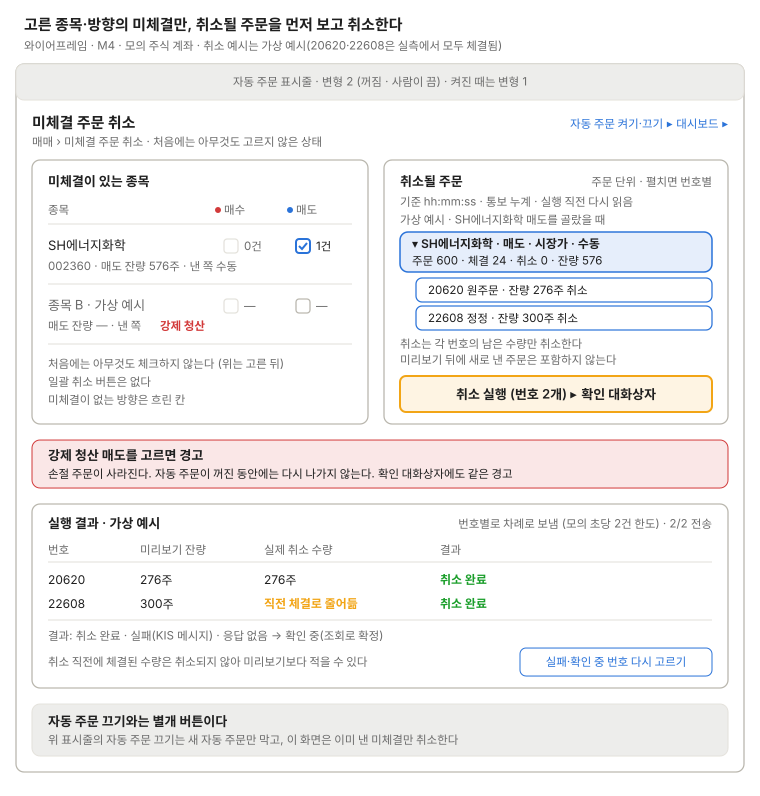

미체결 주문 취소
고른 종목·방향(매수/매도)의 미체결만 취소한다.

왼쪽에서 종목·방향을 고르면 오른쪽에 취소될 주문이 주문 단위로 묶여 나오고(펼치면 번호별, 이번에 취소할 번호만 강조), 목록과 미리보기에 낸 쪽(수동·전략·강제 청산·회차)을 보이며, 그때서야 실행 버튼이 켜진다.
실행 버튼은 확인 대화상자의 취소 행(번호별 취소 수량, 낸 쪽)을 연다. 강제 청산 매도를 고르면 손절 주문이 사라진다는 경고를 띄운다. 실행하면 번호마다 취소를 차례로 보내고(모의 초당 2건 한도), 결과 영역에 번호별 완료·실패·확인 중과 취소 직전 체결로 줄어든 수량을 보인다. 미리보기는 기준 시각과 출처(통보 누계)를 보이고 실행 직전에 다시 읽는다. 그림의 20620·22608 취소와 결과는 가상 예시다. 실측에서는 두 번호 모두 체결됐다. 표시줄은 업무 흐름 3(자동 주문 끄기 → 미체결 주문 취소)에 맞춰 변형 2로 뒀다. 변형 2의 "미체결 주문 취소 ▸" 링크가 이 화면으로 온다.
쓰는 공통 UI
화면 틀 · 자동 주문 표시줄 (변형 2, 켜진 때 변형 1) · 확인 대화상자 (취소 행) · 상태 표시명 (주문) · 주문 체인 행
상태
| 상태 | 보일 것 |
|---|---|
| 처음 (아무것도 안 고름) | 미리보기 "고른 것이 없어 0건", 실행 버튼 비활성 |
| 미체결 없음 | "취소할 미체결이 없다" 한 줄, 실행 버튼 없음 |
| 불러오는 중 | 종목 목록 자리에 뼈대, 체크 칸 비활성 |
| 조회 오류 | 마지막 목록을 흐리게 두고 오류 한 줄 + 다시 시도, 실행 버튼 비활성 |
| 보내는 중 (번호 없음) | 미리보기에 보이되 고를 수 없음, "번호가 생기면 취소 가능" |
| 확인 중 (UNKNOWN) | 경고색 배지, 취소 불가. 조회로 확정된 뒤 다시 고른다 |
| 이미 취소 중인 번호 | "취소 중" 표시, 다시 보내지 않는다 |
| 장 마감 뒤 소멸 미확인 잔량 | "소멸 확인 전" 표시, 취소 대상에서 뺀다(가정) |
| 실시간 끊김 | 표시줄 변형 5 + 미리보기 출처가 "조회"로 바뀌고 기준 시각을 보인다 |
| 실행 중 | 번호별 진행 n/N 전송, 체크 칸 잠금 |
| 일부 실패·응답 없음 | 결과에 실패(KIS 메시지)·확인 중, 남은 번호 다시 고르기 |
| 자동 주문 켜짐 | 표시줄 변형 1 + "미리보기 뒤에 낸 주문은 포함 안 됨" |
화면 규칙
- 흐름: 미체결이 있는 종목을 보여 주되 아무것도 미리 체크하지 않는다 → 고른다 → 취소될 주문 목록을 보여 주고 확인받는다
- 주의: 일괄 취소 버튼은 없다. 정정 체인은 번호마다 취소가 따로 나간다. 취소는 그 번호의 잔량만 취소한다
정할 것
- 취소될 목록을 주문 단위로 묶을지: 주문 단위로 묶고 펼치면 번호별로 보인다(결정 2026-10-16)